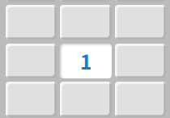

💣 マインスイーパー 遊び方
💡 基本ルール（共通）
マスを開け、数字（周り8マスの地雷の合計数）をヒントに地雷の場所を特定していくパズルゲームです。
- マスを開く: モードを「⛏️ 開く」にしてタップ（または左クリック）。
- 旗を立てる: モードを「🚩 旗」に切り替えてタップ（または右クリック / 長押し）。

図: 「1」の周りには必ず1つだけ地雷があります。
🎮 1人用のルール
- 地雷を開いたら: 即ゲームオーバーとなります。
- 勝利条件: 地雷以外のすべての安全なマスを開ければクリアです。
⚔️ 対戦（1対1）のルール
- ターン制: 10秒の制限時間内に操作を行い、交代しながら進めます。
- 地雷を開いたら: ゲームオーバーにならず減点となり、相手のターンに交代します。
- 勝利条件: 全マスが開いた時点で合計スコアが高いプレイヤーの勝利です。